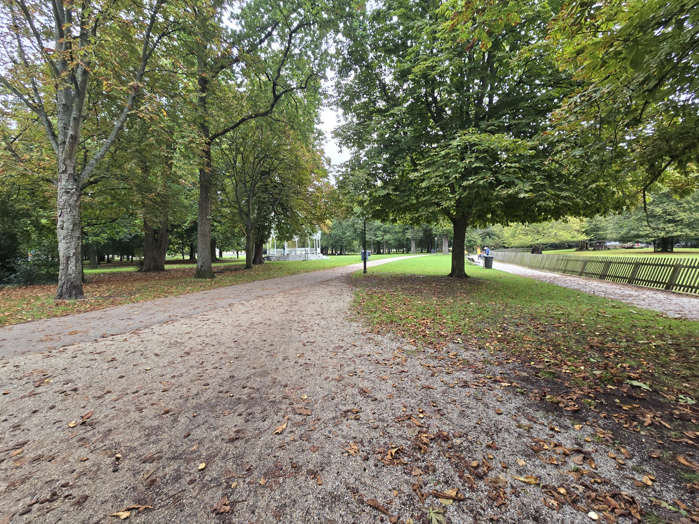
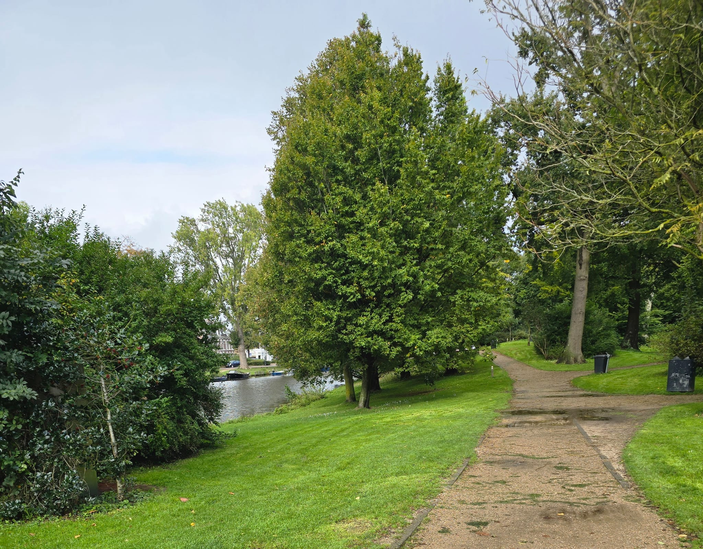

is an artificial lake directly east of the Haarlem city. It was dug in 1994, mainly for recreation purposes and
forms parts of the Spaarnwoude recreational area. You can do there some activities for example: swimming, volleyball
and football in its shore. There are many festivals held on the shore of this lake yearly. If you are willing to join one of these festival, it is beter to register
early because tickets can become expensive.

Stadsboerderij.
2-Stadsboerderij de Houthoeve
is indeed a city farm located in Haarlem. Like other urban farms, Stadsboerderij de Houthoeve offers a space where
visitors, especially children, can interact with farm animals, such as goats, sheep, pigs, and chickens, and learn
about sustainable farming and nature. It’s a community-oriented place, serving as both an educational resource
and a recreational spot for locals and tourists alike.The farm promotes environmental awareness and teaches visitors
about animal care, gardening, and the importance of green
spaces in urban areas. It likely hosts various activities, workshops, and seasonal events,
which can make it a fun destination for families or school trips.The relaxed atmosphere and opportunity
to experience farm life
make it a peaceful escape within the city, offering a balance of education and recreation.

Kenaupark.
Kenaupark
is a well-known park located in the heart of Haarlem, Netherlands. It was established in the 19th century and is named after Kenau
Simonsdochter Hasselaer, a heroine of the Siege of Haarlem in 1573, known for her resistance against Spanish forces. The park serves
as a tribute to her bravery and leadership.
Kenaupark is a beautifully landscaped area, featuring wide paths, green lawns, and large trees. It is often enjoyed by locals for
its peaceful atmosphere, making it a popular spot for walks, picnics, and relaxation. The park also hosts various events throughout
the year, including open-air concerts and festivals. Due to its proximity to Haarlem's train station and the city center, it is easily
accessible for both residents and visitors.
With its rich historical background and serene environment, Kenaupark is not only a place of leisure but also a significant historical and cultural site in Haarlem.
We use cookies to ensure you get the best experience on our website.
AcceptDecline